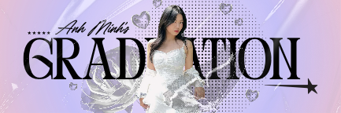
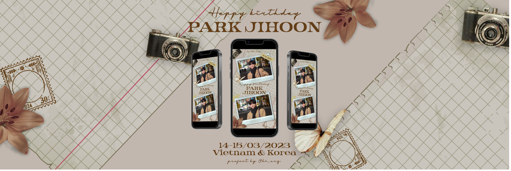
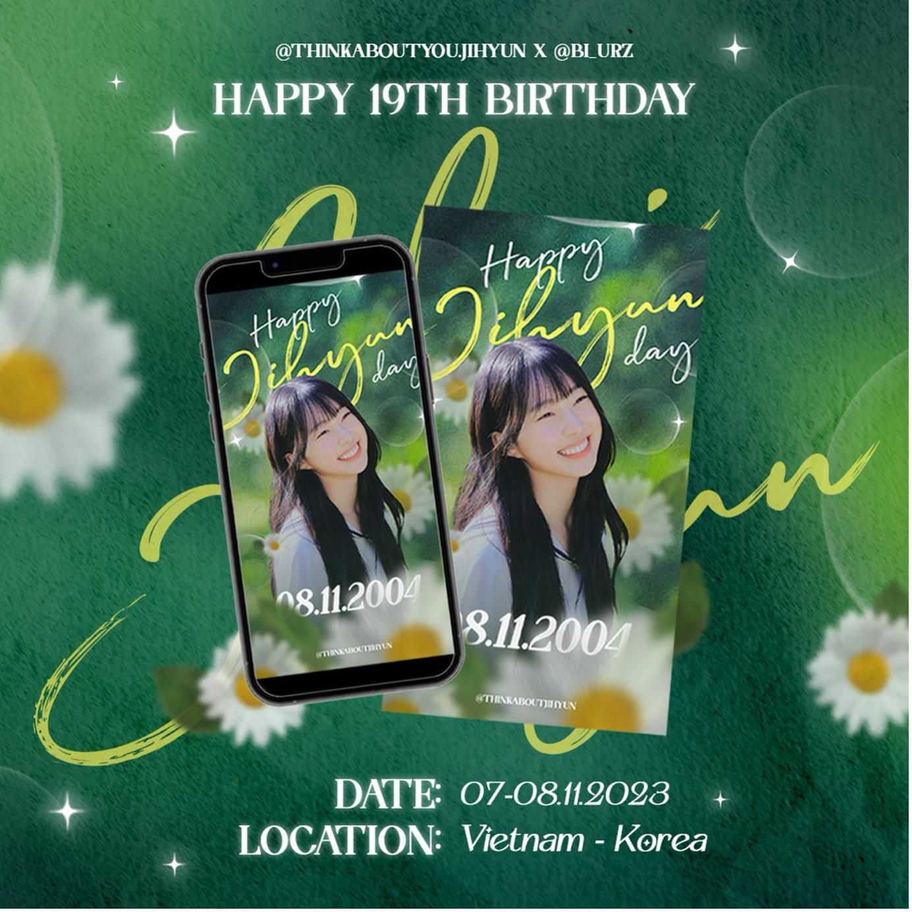
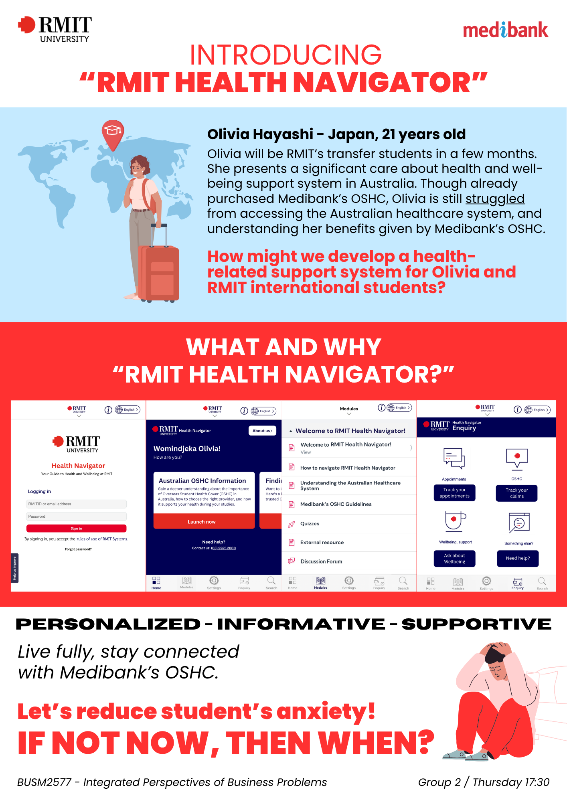
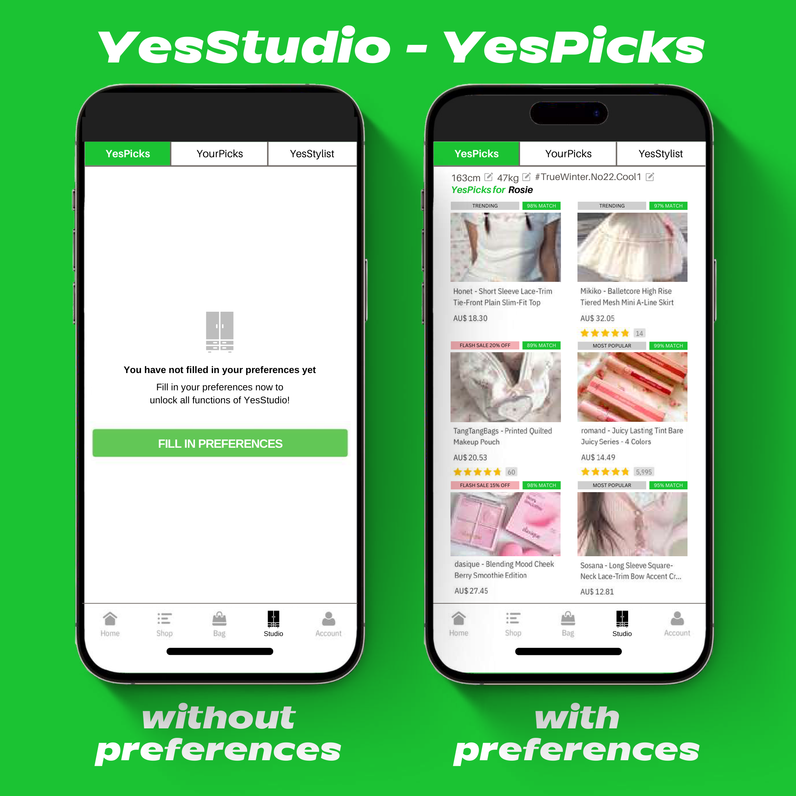
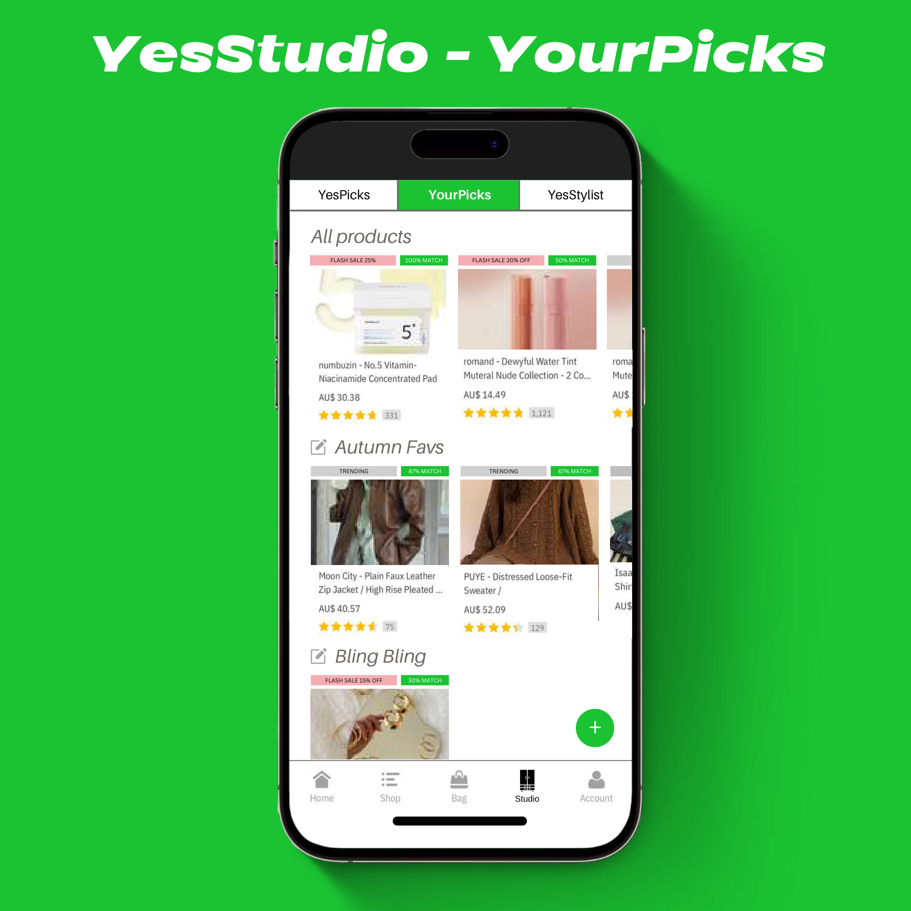
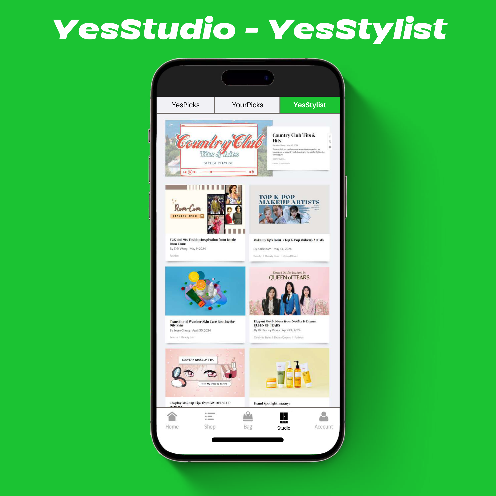
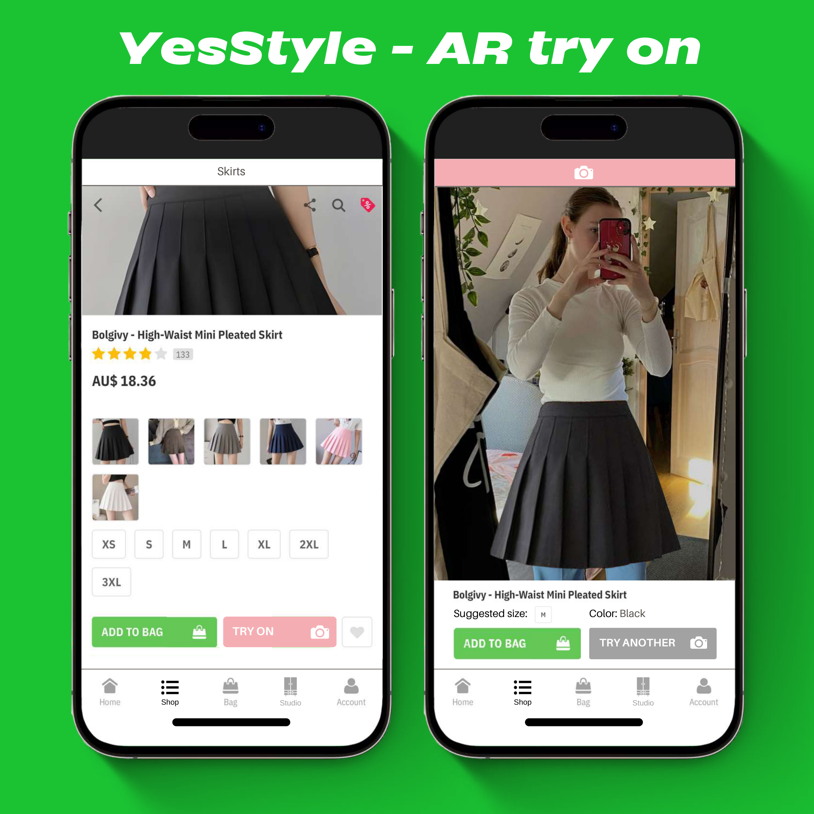
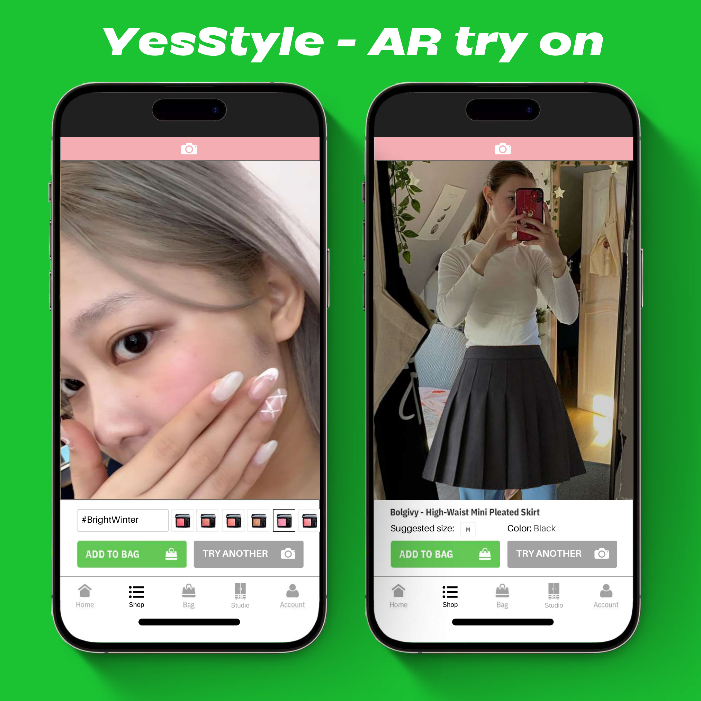

Anh Minh's Graduation
Editorial banner with serif typography, metallic accents and a soft gradient — a celebratory, modern portrait layout.
Portfolio 02 — Graphic Design
I design editorial graphics, event identities and short-form social that lean on typography and restraint — every element earns its place.
Practice
Freelance Graphic Designer
Independent · Vietnam · Korea · Thailand · Australia
2022 — Present
UX & UI — Coursework
RMIT University · BUSM2577
Academic
Selected projects

Editorial banner with serif typography, metallic accents and a soft gradient — a celebratory, modern portrait layout.

Vintage scrapbook aesthetic: grid paper, film cameras, stamps and dried florals framing a triptych of phone mockups.

Forest-green palette with daisies and script lettering — a warm, fan-led celebration graphic for a cross-border event.

Sky-blue summer birthday campaign with polaroid cards and playful script — a light, airy piece for a Vietnam–Thailand event.
Featured case studies
Case study · UI & visual design
A mobile concept for international students navigating the Australian healthcare system. I designed the visual identity, persona board and four core screens — login, home dashboard, modules and enquiry — in a calm medical palette led by Medibank red and RMIT white.

Click to open at full resolution.
Case study · UI · UX
A five-screen redesign for the YesStyle shopping app. I introduced YesPicks, YourPicks and YesStylist tabs, then pushed into a speculative AR try-on flow with sizing and colour selection. The visual system balances clean product grids with warm editorial typography.





Click any screen to open at full resolution.
Tools & skills